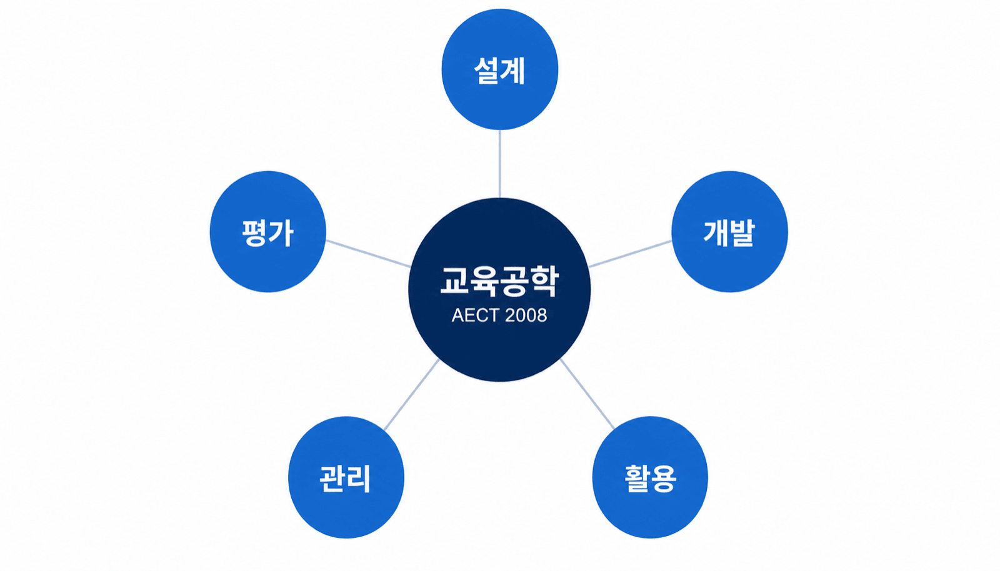
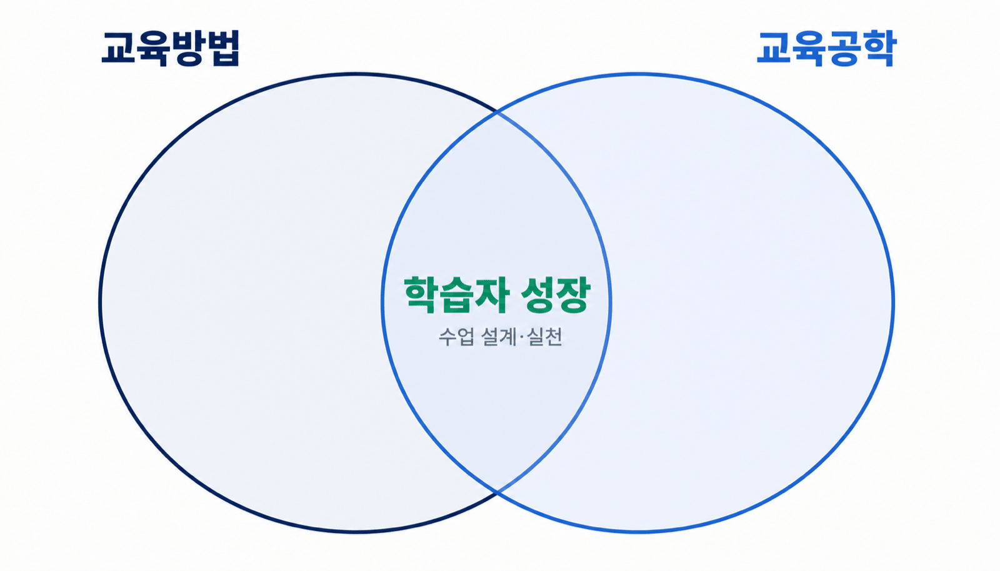
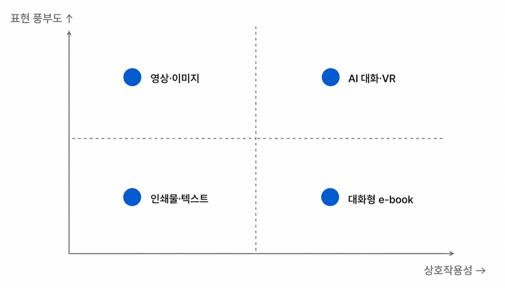
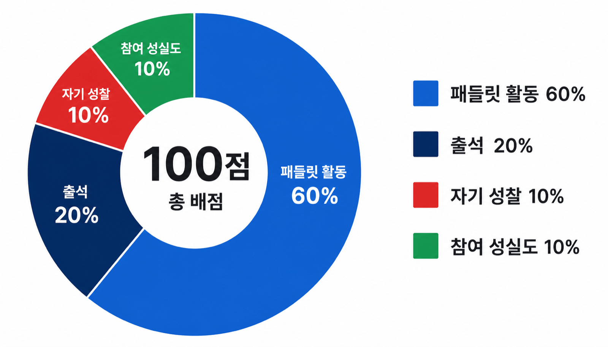
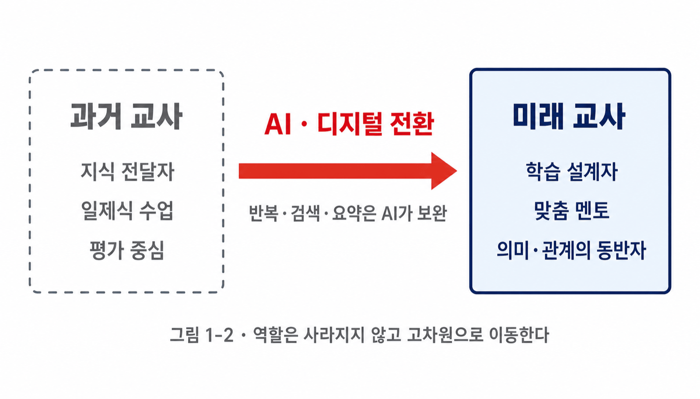

두 학문의 정의와 접점, 그리고 이 과목이 다루는 범위를 정리한다.
교육방법(教育方法)은 학습자가 정해진 목표에 도달하도록 교사가 의도적으로 선택하는 교수 절차와 활동의 총체이다.
AECT(2008): 적절한 기술적 과정과 자원을 창출·사용·관리함으로써 학습을 촉진하고 수행을 향상시키는 연구·실천 분야.
Seels & Richey(1994): 설계·개발·활용·관리·평가의 다섯 영역.

두 학문은 학습자의 성장이라는 같은 지점을 향한다.

수업 설계·매체 활용·디지털 전환 시대의 교사상을 세 항으로 나누어 살핀다.
수업 설계는 단순히 '가르칠 순서를 짜는 일'이 아니다. 학습자가 어디서 출발하고 무엇에 부딪히며 어떤 지점에서 의미를 발견하게 할지를 구조적으로 예측하고 배치하는 일이다.
Mayer(2001) 멀티미디어 원리: '단어+그림'은 '단어만'보다 학습 효과가 크다.

AI·디지털은 정형화된 작업을 보완한다. 그 자리에서 교사는 경험을 설계하고 사고를 촉진하는 역할로 이동한다.
4부 12장 체계, 각 부의 핵심 질문, 평가 철학을 함께 살핀다.
| 부 | 부 제목 | 장 범위 | 핵심 키워드 |
|---|---|---|---|
| 제 1 부 | 이론적 기초 | 1 – 3장 | 교육공학의 정의 · 학습이론 · 매체이론 |
| 제 2 부 | 수업 설계의 실제 | 4 – 6장 | 체제적 설계 · 수업 절차 · 협동학습 |
| 제 3 부 | 학습자 동기와 매체 | 7 – 9장 | 동기 유발 · 멀티미디어 설계 · 디지털 교과서 |
| 제 4 부 | 현장과 미래 | 10 – 12장 | AI와 교육 · 평가 · 교사 전문성 |

2022 개정 교육과정, AI·디지털 시대의 교사, 한 학기 끝의 성찰.
새 교육과정은 추구하는 인간상 네 모습을 제시한다. 각 인간상은 어떤 교수 방법으로 길러질 수 있을까?

한 학기의 길은 곧
나만의 교사 철학으로
가는 길이다.
| 저자(연도) | 제목 · 출처 |
|---|---|
| AECT (2008) | Definition and Terminology Committee Document. AECT. |
| Mayer, R. E. (2001) | Multimedia Learning. Cambridge University Press. |
| Seels & Richey (1994) | Instructional Technology: The Definition and Domains of the Field. AECT. |
| 교육부 (2022) | 2022 개정 교육과정 총론. 교육부 고시 제2022-33호. |